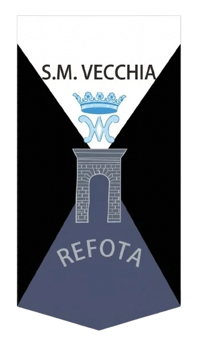
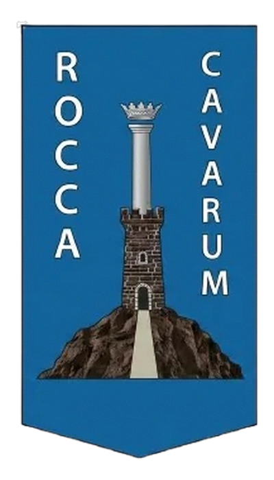
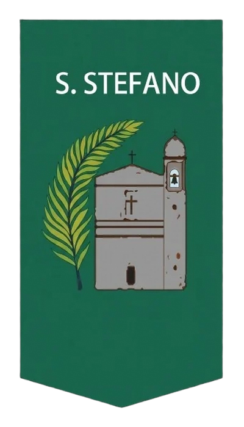
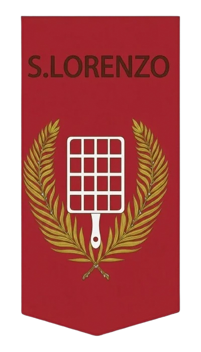
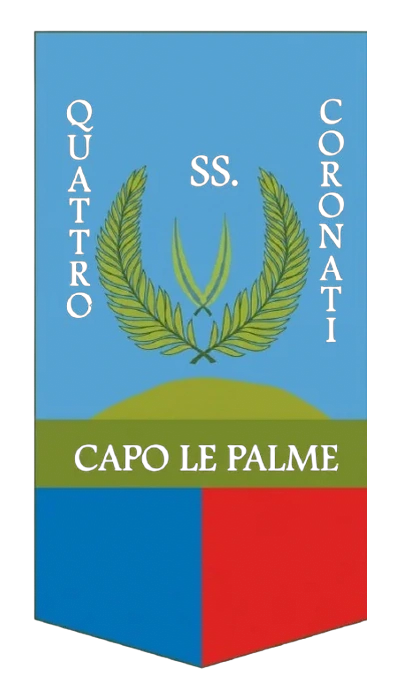
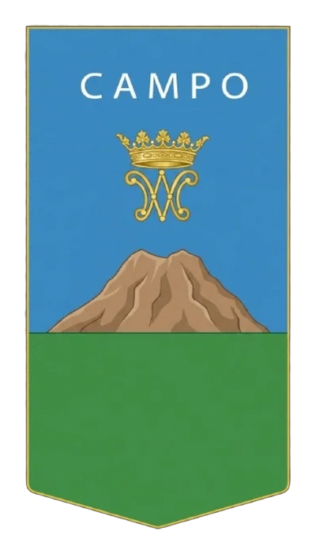
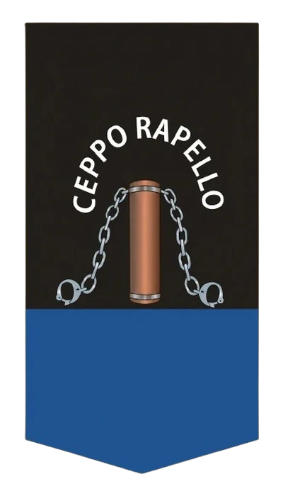

Il Palio
della Pace
Rievocazione Storica del Trattato di Cave 1557
30ª Edizione · 2026
Riscopri la Pace che cambiò la storia
Il 14 Settembre 1557, all'interno dell'antico Palazzo Leoncelli di Cave, tre Cardinali pontifici e il Duca d'Alba firmarono il Trattato di Pace che pose fine alla Guerra del Sale tra lo Stato Pontificio e la Spagna di Filippo II — gettando le basi per la storica Pace di Cateau-Cambrésis del 1559.
Esplora
Tutto sull'evento
L'evento in numeri
30 anni di storia viva
I Colori e i Rioni
Le Sette Contrade
I sette rioni storici di Cave che si contendono ogni anno il prestigioso Drappo del Palio.

Santa Maria Vecchia Refota
Campione in Carica 2025 🏆
Rocca di Cave
Vincitrice 2024
Santo Stefano
Contrada Storica
San Lorenzo
Contrada Storica
Quattro Santi
Contrada Storica
Campo
Contrada Storica
Ceppo
Contrada StoricaEdizione 2026
Programma in Sintesi
Quest'anno vi aspettiamo dal 6 al 13 Settembre con tutti gli appuntamenti ufficiali!
Partecipa
Vuoi sfilare nel Corteo Storico?
Se non hai il costume d'epoca, non preoccuparti: te lo troviamo noi!
Contattaci per partecipare o per qualsiasi informazione.